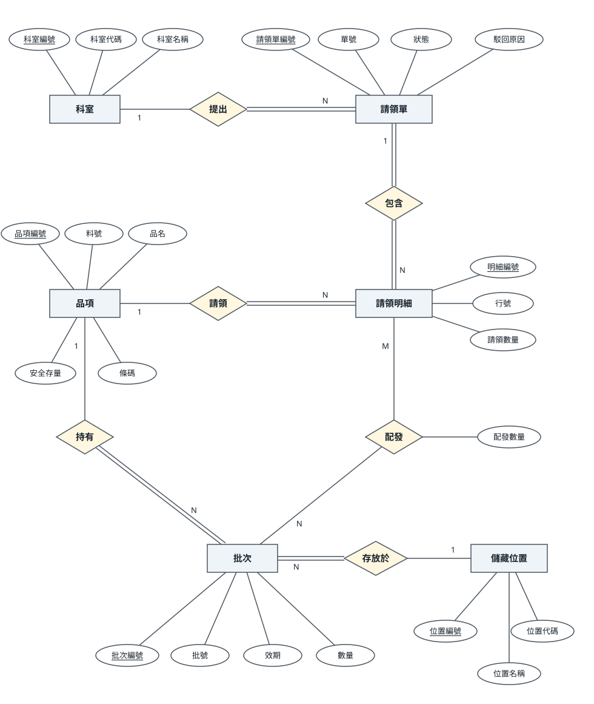
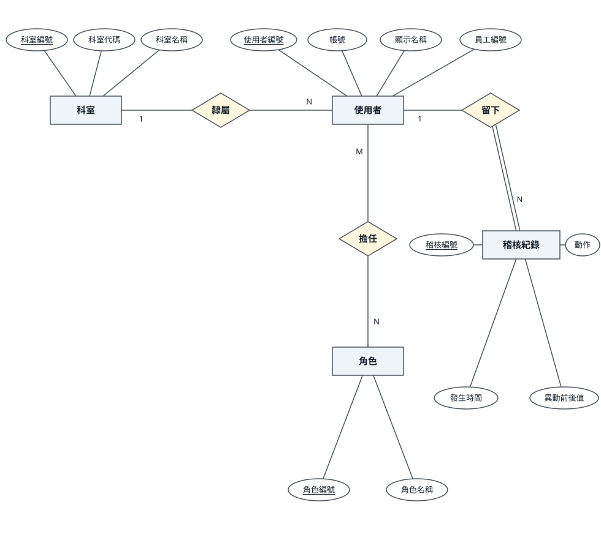
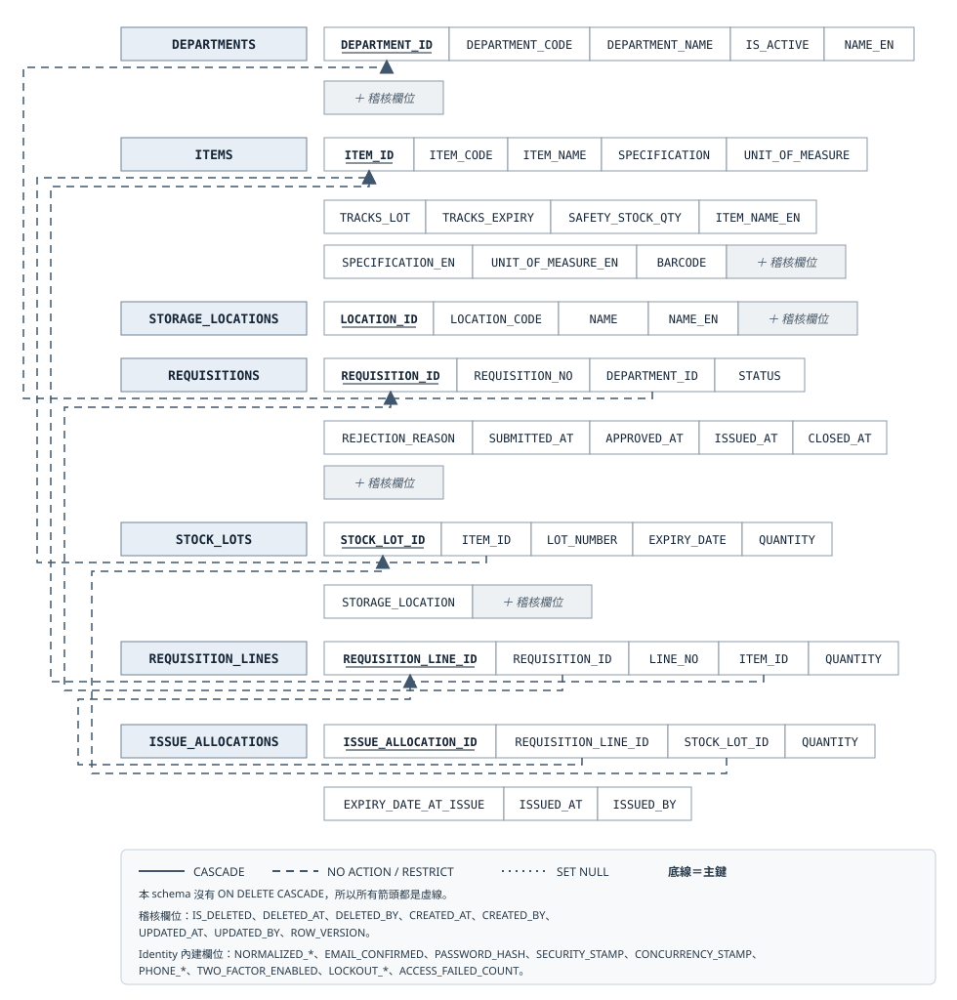
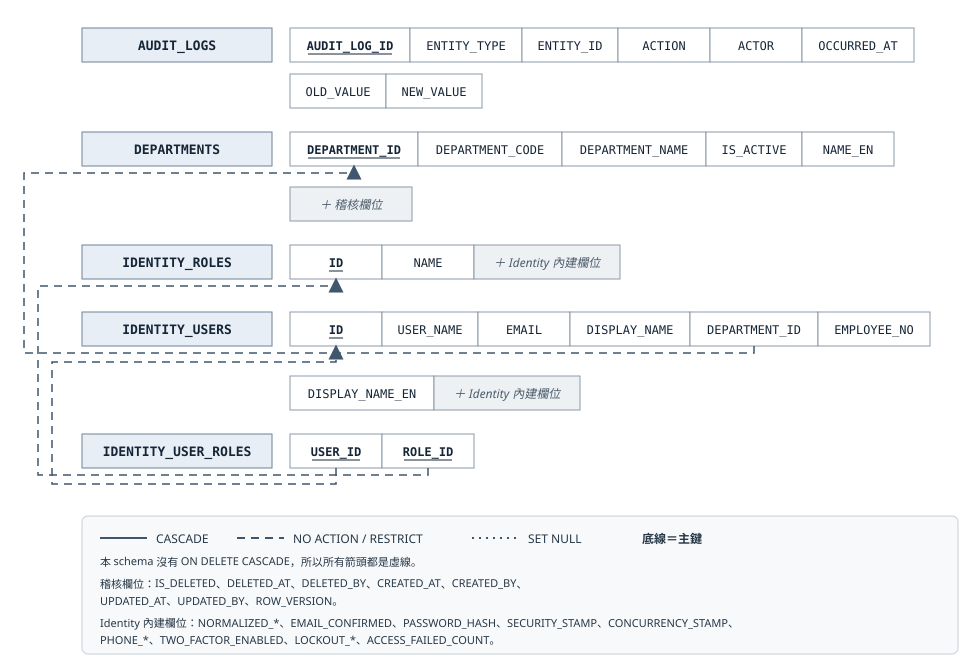

C# · ASP.NET Core MVC · Oracle · Docker
虛構醫院的內部系統：護理站送出請領單，中央庫房審核、依效期先到期先出（FEFO）配批發料， 全程寫入只增不改不刪的稽核軌跡。
這份作品想回答的不是「用了哪些技術」，而是 —— 你怎麼知道它是對的？
01 — 為什麼重點不在功能數量
它們不報錯、畫面完全正常，而且「跑起來看看」一個都抓不到：
| 如果這裡寫錯 | 使用者會看到什麼 |
|---|---|
| 效期發料的順序反了 | 數量正確、庫存扣得剛好、頁面毫無異狀 —— 只是發出去的是快過期的那批 |
過期判定差一天（< 寫成 <=） | 每批醫材少用一天。沒有任何人會回報 |
| 兩人同時領最後一箱 | 兩張單都成功、庫存變成 -5 |
| 請領單的非法狀態轉換被靜默忽略 | 使用者按了核准、沒有錯誤訊息、單子還停在原狀態 |
| ER 圖與實際 schema 脫節 | 圖畫得漂漂亮亮，只是它已經是錯的 |
所以這個專案的重點是：為每一條這樣的規則，設計一個能區分對錯的驗證。
dotnet build MedSupplyOps.slnx # 編譯 + 分析器（警告即錯誤）
dotnet test MedSupplyOps.slnx # 334 條測試
dotnet format --verify-no-changes # 格式與命名
scripts/mutation-probe.ps1 # ★ 鑑別力探針：證明測試真的測得到
scripts/generate-er-diagram.ps1 -Check # ★ ER 圖漂移檢查
scripts/check-db-clean.ps1 # ★ 測試不得在資料庫留下殘留前三道是常見的，後三道才是這個專案的重點。
02 — 鑑別力探針
不能區分「修前」與「修後」的驗證，等於沒有驗證。
測試全綠只代表「測試沒有失敗」，不代表「測試測得到那件事」。 所以有一支腳本會自動把實作故意改壞 13 次，每次確認對應的測試變紅，再還原並複驗回到基線：
| 探針 | 對應規則 | 變紅 |
|---|---|---|
| P1 FEFO 排序反轉（改成先發最晚到期） | 先到期先出 | 2 條 |
P2 過期判定 < 改成 <= | 效期當天仍可用 | 2 條 |
| P3 移除同效期的批號決勝鍵 | 跨環境配批一致 | 1 條 |
| P4 允許部分發料 | 不足即整筆失敗 | 4 條 |
| P5 狀態機偷開一條非法轉換 | 非法轉換須被拒絕 | 2 條 |
| P6 駁回不再要求填原因 | 駁回須填原因 | 1 條 |
P7 拿掉發料的 SELECT … FOR UPDATE | 並發不得超發 | 3 條 |
| P8 拿掉查詢服務的 DI 註冊 | 正式組裝必須完整 | 9 條 |
| P9 整張單發料改成「跳過失敗的明細繼續」 | 整張單原子發料 | 6 條 |
| P10 入庫拿掉品項列的鎖 | 同品項的新批號入庫必須序列化 | 2 條 |
| P11 入庫的過期判定差一天 | 效期當天仍可入庫 | 1 條 |
| P12 首頁「沒有角色」的範圍改回「不受限」 | 沒有角色的帳號不得看到全院資料 | 1 條 |
| P13 GS1 遇到不認得的應用識別碼時改成略過 | 不認得就整筆拒絕，不可部分採用 | 1 條 |
另有 5 支資料庫層探針，直接寫入壞資料確認被限制條件擋下：負數庫存、不存在的狀態值、 已駁回但無原因、料號重複 —— 以及軟刪除後沿用同一料號必須放行。 最後一支特別重要：前四支只證明「該擋的有擋」，只有它能證明「不該擋的沒有誤擋」。
03 — 系統架構
| 決定 | 理由 |
|---|---|
| Domain 層零套件依賴（連 EF Core 都不引用） | 不是架構潔癖：它讓 FEFO 與庫存規則能在沒有資料庫的情況下被測試，也證明領域規則沒有偷偷依賴持久化細節 |
| 寫入用 EF Core、讀取用手寫 Oracle SQL | 全交給 ORM 的話，SQL 是誰產生的、為什麼那樣產生、怎麼調，作者一句都答不出來 |
| 授權預設拒絕（fallback policy）+ 公開端點白名單 | 預設公開的話，漏標一個端點永遠不會被發現 —— 而且只有沒登入的人才會發現 |
TreatWarningsAsErrors |
C# 沒有獨立的型別檢查步驟，把分析器警告升級成錯誤，才有第三道真的會擋人的關卡 |
04 — 資料庫
矩形表示實體、菱形表示關聯、橢圓表示代表性屬性；屬性文字的底線表示主鍵。
實體與關聯間的雙線表示全部參與、單線表示部分參與，線旁的 1、N、M 表示基數。
每張請領單一定由某個科室提出，所以請領單那一側是雙線；科室可以一張單都沒提，所以是單線。
「配發」是 M:N 關聯：一筆明細可能要跨數個批次，依先到期先出湊足數量；同一批次也可能 分給多筆明細。「配發數量」描述的是這筆明細從這個批次拿了幾個，所以屬於關聯本身。


下面這張 ER 圖不是手繪的：它由腳本從 Oracle 的資料字典查出來產生，
並提供 -Check 模式 —— schema 改了而圖沒重產，關卡就失敗。
一張匯出的 schema 圖是最典型的「錯了但看起來正常」：資料庫加了欄位、圖沒更新，圖依然畫得漂亮。
共 15 張表（8 張業務表 + 7 張身分表）。圖太寬時可以左右捲動，或 直接在 GitHub 上看原始檔。
每列是一張表、每格是一個欄位；底線表示主鍵，箭頭由外鍵指向被參照的主鍵，線型表示刪除規則。


IDENTITY_USER_CLAIMS、IDENTITY_USER_LOGINS、IDENTITY_USER_TOKENS、IDENTITY_ROLE_CLAIMS 是本系統未使用的 Identity 標準表，因此不畫入關聯綱目。
字串一律 VARCHAR2(n CHAR) |
AL32UTF8 下一個中文字佔 3 bytes，預設的 BYTE 語意會讓 VARCHAR2(50) 只裝得下 16 個中文字，
長科室名直接爆 ORA-12899 —— 而開發者看到欄位長度 50、輸入 20 個字，會完全想不通 |
| 軟刪除用函數索引 | 只對未刪除的資料強制唯一。直接對料號建 UNIQUE 的話，軟刪除後就永遠無法沿用同一個料號，而且不會有任何訊息解釋原因 |
全 schema 零 ON DELETE CASCADE |
刪一個科室若連帶刪光它的請領單與發料紀錄，在醫療場域等同於銷毀稽核軌跡。所有刪除一律為軟刪除 |
05 — 核心流程
| 為什麼用悲觀鎖不用樂觀鎖 | 發料是短交易、高衝突，結果對使用者就是「能不能領到」。樂觀鎖讓第二個人做完所有事才被告知「請重試」； 悲觀鎖讓他在讀取階段等待，等到之後看到的是扣減後的真實庫存，於是他得到的是「庫存不足，目前可用 1」這種有意義的訊息 |
| 等鎖逾時 ≠ 庫存不足 | 逾時代表庫存可能夠、只是拿不到鎖，呼叫端該重試。混為一談會讓使用者看到一個假的缺貨訊息。
逾時時可用量回傳 -1 而不是 0：我們根本沒讀到資料，回 0 會讓呼叫端以為「查過了就是沒貨」 |
資料庫的 CHECK (quantity >= 0) 是最後防線 |
P7 探針拿掉應用層的鎖之後，資料依然沒有變成負數 —— 第二次 UPDATE 撞上 CHECK 而失敗。 應用層負責「給出正確且友善的結果」，資料庫層負責「保證資料永遠不會錯」 |
六個狀態、五條合法轉換。不允許的轉換必須被拒絕並回傳明確錯誤，不可靜默忽略 —— 探針 P5 就是在驗這件事。
06 — 效能
時間量測的母體是「你的查詢 ＋ 作業系統排程 ＋ GC ＋ 其他行程」，你只想量第一項。
所以量的是 DBMS_XPLAN 的 Buffers（logical reads），並要求
A-Rows 前後相同 —— 回傳列數變了就不是最佳化，是把查詢改成別的東西。
| 查詢 | 索引前 | 索引後 | A-Rows |
|---|---|---|---|
| FEFO 可用批次查詢 | 1004 buffers（全表掃描） | 111 buffers（索引範圍掃描） | 101 → 101 |
| 首頁稽核列表（20 萬筆稽核） | 2006 buffers | 54 buffers（−97%） | 5 → 5 |
| 已過期仍在庫計數（2 萬筆批次） | 19 buffers，已走既有索引 —— 判定不需要加索引 | 1 → 1 | |
07 — 可維運性
| 項目 | 做過什麼 |
|---|---|
| 備份與還原演練 | 兩層備份（Data Pump 邏輯備份 + volume 冷備份）。演練時發現：備份腳本會留下兩個大小合理的檔案，
而那不是備份 —— 容器沒有乾淨關機就被 SIGKILL。改成「乾淨關機的標記 + 結束碼不是 137」才准打包，
失敗一律寫 UNTRUSTED.txt。還原也修掉一個假失敗（成敗判斷改為讀容器內的 log 檔）。
最後實際做了一次覆蓋式還原：還原前寫入的標記資料消失、四張表列數回到基準 |
| 冷啟重演 | 從乾淨 clone、全新資料庫 volume，照 README 的指令重跑一次六道關卡。 抓到過一條只在全新資料庫才會失敗的測試 —— 它在累積過的環境裡永遠是綠的 |
| 需求追溯關卡 | 每個需求編號在追溯表裡恰好一列；「已實作」列的測試方法、探針編號、檔案路徑必須真的存在； 只做了一半的不准標成「已實作」。它隨測試一起跑，不是一個會被遺忘的額外步驟 |
| 測試不得留下殘留 | 整合測試共用同一個 Oracle 容器。殘留資料不會被任何斷言發現（每條測試的斷言都限定在自己的範圍內）， 所以另有一道關卡：跑完測試，資料庫必須回到只剩種子資料的狀態 |
08 — 範圍
範圍界線與理由都寫在需求規格裡：不做病歷、醫囑、掛號與健保申報， 也不做對外採購與驗收、多院區調撥、前端 SPA 與高可用叢集。